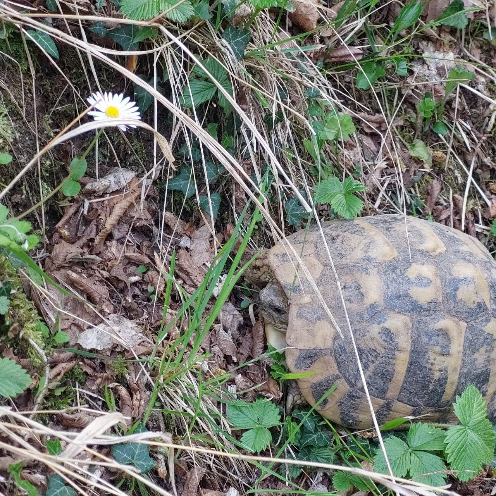

Frank's first blog
Merel was already happily blogging away, and I just kept putting it off. Letting all the good moments for my first Frank Blog pass me by. Missed Orthodox Easter — that would've been a great one. And before that, Dita e Verës, Albania's Summer Day.

What is Dita e Verës anyway?
We celebrate the start of summer this early because Albania traditionally only had two seasons. You tie a red and white bracelet around your wrist. And you keep it on until you spot the first swallow. Then you take it off and hang it on a bush or tree — wherever you happen to be at that moment.
This year I forgot to get one for the first time. Also forgot again after that. On Summer Day the city gets too busy for me. I was there the day before and thought I'd pick up a bracelet. But yeah, forgot. Only remembered when I got home. We didn't have any red and white cord in the house so I couldn't make one myself either. Should be doable though.
The swallows are back
Well, at least the swallows are back. In fact, yesterday one flew right into the house. I think swallows are the kind of birds that fly into windows trying to get out. And that's exactly what happened — did a lap around the room and flew back out through the double front door that was wide open.
Tortoises on PasneserPark
And what really marks the start of summer for me: the first tortoises are back. They're not actually turtles — they're land tortoises. I have no idea where they go in winter. Surely they don't migrate south like birds do. : ) They're way too slow for that. But they're also too big to just all disappear for an entire winter. I don't get it! They're quite large animals, there are so many of them on PasneserPark, and all winter long — not a single one to be seen.
Summer has started
Summer is here. Tortoises on PasneserPark, swallows doing laps through the living room, first bookings coming in via Booking.com and Airbnb, daily volunteer requests through Workaway. And the weather is great.
Yesterday I was even working outside topless. I know photos of me shirtless tend to do well online, but I'll leave those out of the blog. DM me if you want them. ; )
Frequently Asked Questions
What is Dita e Verës?
Dita e Verës is Albania's Summer Day. You wear a red and white bracelet until you spot the first swallow, then hang it on a tree or bush.
When do the swallows return to Albania?
The swallows return to Albania in March, around Dita e Verës. They sometimes even fly inside if the doors are open.
Are there tortoises on PasneserPark?
Yes, there are lots of land tortoises on PasneserPark. They reappear in spring when summer begins.